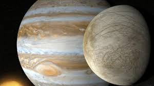

|

Europa (Jüpiter’in Uydusu)
Europa, Jüpiter’in en büyük dört uydusundan biridir ve Güneş Sistemi’ndeki en ilginç gök cisimlerinden biri olarak kabul edilir. 1610 yılında
ünlü astronom Galileo Galilei tarafından keşfedilmiştir. Jüpiter’in Galile uyduları olarak bilinen dört büyük uydusundan biridir; diğerleri Io,
Ganymede ve Callisto’dur. Europa, bu uydular arasında en küçük olanıdır, ancak bilim dünyasında en çok dikkat çekenlerden biridir.
Europa’nın yüzeyi neredeyse tamamen buz tabakasıyla kaplıdır. Bu buz tabakasının altında ise sıvı halde bir okyanus bulunduğu düşünülmektedir.
Bilim insanlarına göre bu okyanus, Dünya’daki tüm denizlerin toplamından bile daha fazla su içerebilir. Yüzeyin altında bu kadar büyük miktarda
suyun bulunması, Europa’yı yaşam barındırma potansiyeline sahip en önemli gök cisimlerinden biri haline getirmiştir.
Yüzeyinde devasa çatlaklar ve çizgiler bulunur. Bu izler, Jüpiter’in güçlü kütle çekimi nedeniyle Europa’nın sürekli olarak gerilip sıkışmasından
kaynaklanır. Bu hareketler, yüzeyin altındaki buzun ve suyun zaman zaman yeniden şekillenmesine yol açar. Buzun altındaki gelgit hareketleri, ısı
üretilmesini sağlar ve bu ısı, yüzeyin altındaki suyun donmadan kalmasına yardımcı olur.
Europa’nın atmosferi son derece ince olup, çoğunlukla oksijenden oluşur. Ancak bu oksijen yaşam için yeterli değildir, çünkü atmosfer çok zayıf ve
solunamayacak kadar incedir. Yine de bu durum, Europa’nın kimyasal açıdan aktif bir yapıya sahip olduğunu gösterir.
Bilim insanları, Europa’nın yüzeyinde su buharı püskürmeleri gözlemlemiştir. Bu, yüzeyin altında sıvı suyun varlığını destekleyen güçlü bir kanıttır.
Gelecekte gönderilmesi planlanan Europa Clipper adlı uzay görevi, bu uydunun yüzeyini ve buz altı okyanusunu daha ayrıntılı incelemeyi amaçlamaktadır.
Europa, doğrudan yaşamın kanıtlarını sunmamış olsa da, koşulları mikroorganizma düzeyinde yaşam için uygun olabilir. Yüzeyin altındaki okyanusun,
kimyasal enerji kaynaklarıyla birlikte yaşamı destekleyebileceği düşünülmektedir.
Sonuç olarak Europa, donmuş yüzeyinin altında sakladığı gizemli okyanusuyla Güneş Sistemi’nde yaşam arayışının en umut verici noktalarından biridir.
Bilim insanları için Europa, “yaşam sadece Dünya’ya mı özgüdür?” sorusuna cevap aramanın anahtarlarından biri haline gelmiştir.
|